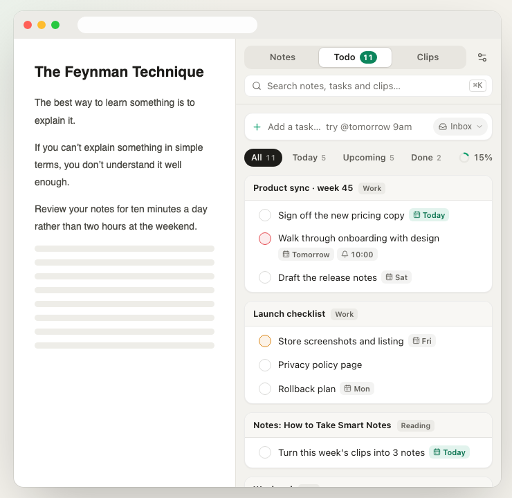

Tasks待办
Every task, in one list所有任务，一个清单
Every - [ ] in your notes shows up in Todo. Tick it there and the note updates too — only that one line is rewritten.笔记里每一个 - [ ] 都会出现在待办页。在待办里勾选，原笔记同步更新，只改那一行。
- Type
@tomorrow 9am,@frior!1— dates, reminders and priority are set for you直接写@明天 9点、@周五、!1，日期、提醒和优先级自动设好 - Today / Upcoming / Done views, drag to reorder今天 / 计划 / 已完成视图，可拖动排序
- System notifications with Done and Snooze, even after a restart到点系统通知，可「完成」或「稍后提醒」，重启浏览器也会补发
